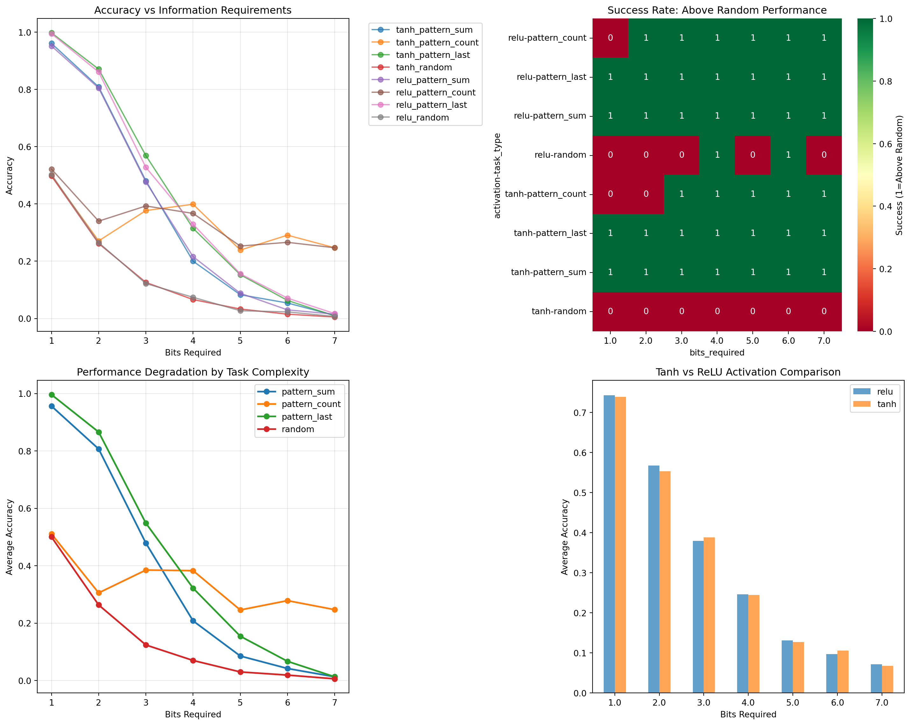
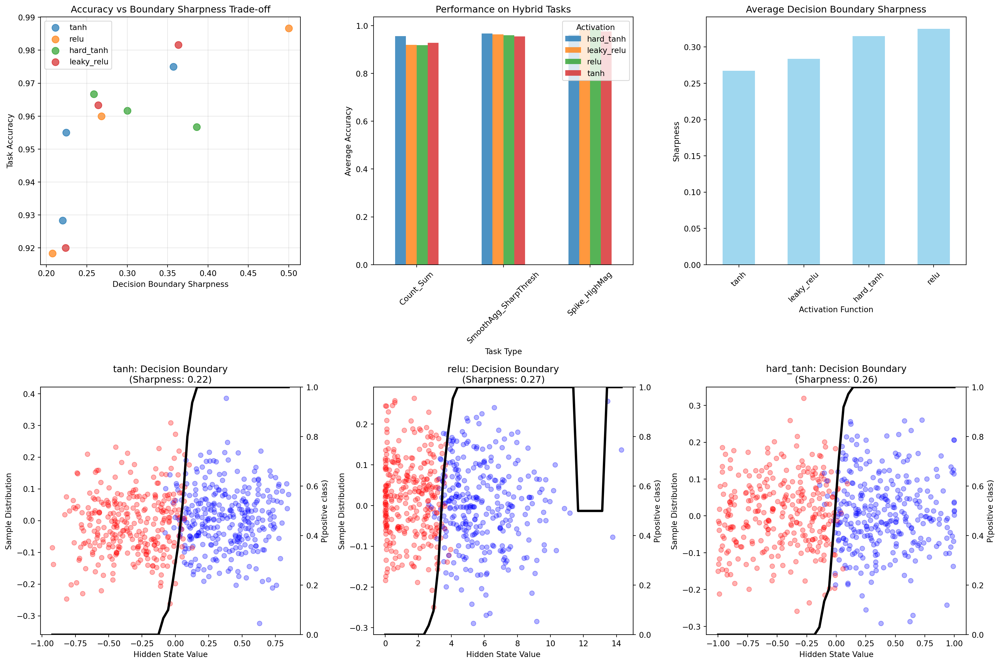
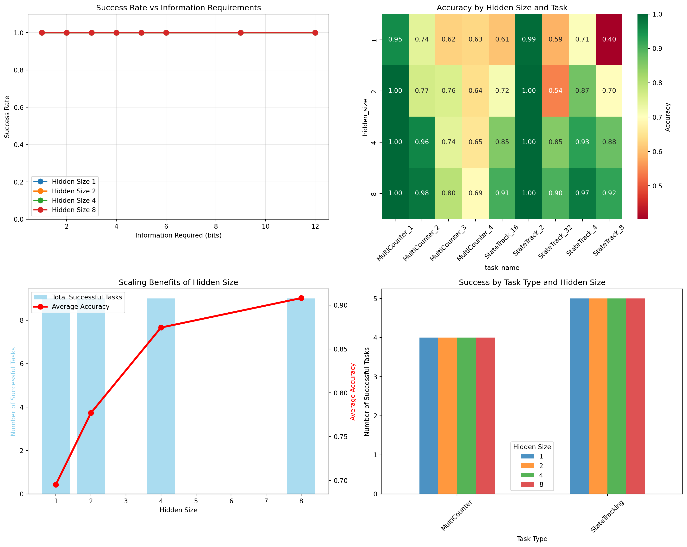

Analyzing GRU Training Dynamics on the Adding Problem - Bonus
Exploring the limits of information encoding in GRU cells and activation functions
programming
web development
research
diary
R&D
information-theory
Author
Luca Simonetti
Published
July 22, 2025
1 Introduction
In Part 3, we discovered something fascinating: our GRU with a hidden size of 1 couldn’t solve the general adding problem, not because of insufficient storage space, but because of the fundamental mathematical constraints of smooth activation functions trying to perform discrete information operations. Basically the architecture of a GRU performs a continuous transformation of the input data, which is not suitable for tasks that require precise bitwise operations, or in general discrete information manipulation.
This raised a profound question that deserves a blog post in its own right: How much information can a single neural network cell actually contain, and what are the theoretical limits imposed by activation functions like sigmoid and tanh?Can we in principle give a precise upper bound on this capacity? And can we set up a theoretical framework to calculate it based on the activation functions used, the dimensions and the overall architecture?
In this bonus section, we’ll conduct a series of targeted experiments to:
Measure the practical information capacity of a single GRU cell across different tasks
Quantify how activation functions limit information encoding capabilities
Explore the trade-off between smooth interpolation and discrete logic
Validate our information bottleneck theory with controlled experiments
Compare theoretical Shannon entropy limits with empirical performance
This is just academic curiosity—understanding, not solving the adding problem. Having an answer to these question could help me design a better architecture in the future when I start working on my actual main project which is a neural network that can play connect 4 with the smallest possible architecture.
Note for fast preview: To preview this document quickly without training models, run:
SKIP_TRAINING=1 quarto preview projects/adding-problem-part3-5.qmd
Let’s dive in!
2 Experiment 1: Information Capacity Measurement
Our first experiment directly measures how many bits of information a single GRU cell can reliably encode and retrieve. We’ll start simple and progressively increase complexity until we hit the ceiling.
Code
import torchimport torch.nn as nnimport torch.nn.functional as Fimport numpy as npimport matplotlib.pyplot as pltimport seaborn as snsfrom torch.utils.data import DataLoader, TensorDatasetfrom tqdm.notebook import trange, tqdmimport pandas as pdfrom sklearn.metrics import accuracy_scoreimport jsonimport os# Global flag to skip training during preview (set to True for fast preview)# Can be controlled via environment variable: export SKIP_TRAINING=1SKIP_TRAINING = os.environ.get('SKIP_TRAINING', 'false').lower() in ['true', '1', 'yes']# ReproducibilityRANDOM_SEED =42np.random.seed(RANDOM_SEED)torch.manual_seed(RANDOM_SEED)class SingleCellGRU(nn.Module):"""GRU with exactly 1 hidden unit for measuring information capacity"""def__init__(self, input_size, num_classes, activation='tanh'):super(SingleCellGRU, self).__init__()self.gru = nn.GRU(input_size, 1, num_layers=1, batch_first=True)self.classifier = nn.Linear(1, num_classes)self.activation = activation# Override activation if neededif activation =='relu':# Replace tanh with ReLU in GRU (hack)self.gru.activation = torch.reludef forward(self, x): out, hn =self.gru(x)# Use final hidden state for classification output =self.classifier(hn.squeeze(0))return outputdef generate_classification_data(n_samples, seq_len, num_classes, task_type='random'):"""Generate classification tasks of varying complexity"""if task_type =='random':# Pure random classification - maximum entropy X = torch.randn(n_samples, seq_len, 1) y = torch.randint(0, num_classes, (n_samples,))elif task_type =='pattern_sum':# Classification based on sum of sequence X = torch.randn(n_samples, seq_len, 1) sums = X.sum(dim=1).squeeze()# Divide sum range into num_classes bins percentiles = torch.quantile(sums, torch.linspace(0, 1, num_classes +1)) y = torch.searchsorted(percentiles[1:-1], sums).long()elif task_type =='pattern_count':# Classification based on counting positive values X = torch.randn(n_samples, seq_len, 1) counts = (X >0).sum(dim=1).squeeze()# Map counts to classes y = (counts % num_classes).long()elif task_type =='pattern_last':# Classification based on last value only X = torch.randn(n_samples, seq_len, 1) last_vals = X[:, -1, 0] percentiles = torch.quantile(last_vals, torch.linspace(0, 1, num_classes +1)) y = torch.searchsorted(percentiles[1:-1], last_vals).long()return X, ydef train_and_evaluate(model, train_loader, test_loader, epochs=100, lr=0.001):"""Train model and return final accuracy""" criterion = nn.CrossEntropyLoss() optimizer = torch.optim.Adam(model.parameters(), lr=lr) model.train()for epoch inrange(epochs):for inputs, labels in train_loader: optimizer.zero_grad() outputs = model(inputs) loss = criterion(outputs, labels) loss.backward() optimizer.step()# Evaluate model.eval() all_preds = [] all_labels = []with torch.no_grad():for inputs, labels in test_loader: outputs = model(inputs) preds = torch.argmax(outputs, dim=1) all_preds.extend(preds.cpu().numpy()) all_labels.extend(labels.cpu().numpy())return accuracy_score(all_labels, all_preds)# Run capacity measurement experimentdef measure_information_capacity():"""Measure how many bits a single cell can handle across different tasks"""# Cache file for experiment 1 cache_file ="experiment1_capacity_results.json"if SKIP_TRAINING:print("SKIP_TRAINING is True - returning placeholder data for experiment 1")# Create placeholder data for visualization placeholder_data = []for activation in ['tanh', 'relu']:for task_type in ['pattern_sum', 'pattern_count']:for bits in [1, 2, 3, 4]: placeholder_data.append({'activation': activation,'task_type': task_type,'num_classes': 2**bits,'bits_required': bits,'accuracy': max(0.5, 1- bits*0.15) + np.random.random()*0.1,'random_baseline': 1.0/(2**bits),'above_random': bits <=3 })return pd.DataFrame(placeholder_data)if os.path.exists(cache_file):print("Loading cached results from experiment 1...")withopen(cache_file, 'r') as f: cached_data = json.load(f)return pd.DataFrame(cached_data)print("Running experiment 1 (this may take a while)...") results = [] n_samples =5000 seq_len =10 train_split =0.8# Test different numbers of classes (bits = log2(classes)) class_counts = [2, 4, 8, 16, 32, 64, 128] # 1 to 7 bits task_types = ['pattern_sum', 'pattern_count', 'pattern_last', 'random'] activations = ['tanh', 'relu']for activation in activations:for task_type in task_types:for num_classes in class_counts: bits_required = np.log2(num_classes)# Generate data X, y = generate_classification_data(n_samples, seq_len, num_classes, task_type)# Split data train_size =int(train_split * n_samples) train_X, test_X = X[:train_size], X[train_size:] train_y, test_y = y[:train_size], y[train_size:] train_dataset = TensorDataset(train_X, train_y) test_dataset = TensorDataset(test_X, test_y) train_loader = DataLoader(train_dataset, batch_size=64, shuffle=True) test_loader = DataLoader(test_dataset, batch_size=64, shuffle=False)# Train model model = SingleCellGRU(1, num_classes, activation) accuracy = train_and_evaluate(model, train_loader, test_loader)# Random baseline random_baseline =1.0/ num_classes results.append({'activation': activation,'task_type': task_type,'num_classes': num_classes,'bits_required': bits_required,'accuracy': accuracy,'random_baseline': random_baseline,'above_random': accuracy > random_baseline *1.1# 10% margin })print(f"{activation} | {task_type} | {num_classes} classes ({bits_required:.1f} bits): {accuracy:.3f}")# Save results to cachewithopen(cache_file, 'w') as f: json.dump(results, f)return pd.DataFrame(results)# Run the experimentprint("Measuring information capacity of single GRU cell...")capacity_results = measure_information_capacity()
Measuring information capacity of single GRU cell...
Loading cached results from experiment 1...
Code
# Visualize resultsfig, axes = plt.subplots(2, 2, figsize=(15, 12))# Plot 1: Accuracy vs Bits Required (by activation)for activation in capacity_results['activation'].unique(): data = capacity_results[capacity_results['activation'] == activation]for task_type in data['task_type'].unique(): task_data = data[data['task_type'] == task_type] axes[0, 0].plot(task_data['bits_required'], task_data['accuracy'], 'o-', label=f'{activation}_{task_type}', alpha=0.7)axes[0, 0].set_xlabel('Bits Required')axes[0, 0].set_ylabel('Accuracy')axes[0, 0].set_title('Accuracy vs Information Requirements')axes[0, 0].legend(bbox_to_anchor=(1.05, 1), loc='upper left')axes[0, 0].grid(True, alpha=0.3)# Plot 2: Success rate (above random) heatmapsuccess_pivot = capacity_results.pivot_table( values='above_random', index=['activation', 'task_type'], columns='bits_required', aggfunc='first').astype(int)sns.heatmap(success_pivot, annot=True, cmap='RdYlGn', ax=axes[0, 1], cbar_kws={'label': 'Success (1=Above Random)'})axes[0, 1].set_title('Success Rate: Above Random Performance')# Plot 3: Accuracy drop-off by task typefor task_type in capacity_results['task_type'].unique(): task_data = capacity_results[capacity_results['task_type'] == task_type] grouped = task_data.groupby('bits_required')['accuracy'].mean() axes[1, 0].plot(grouped.index, grouped.values, 'o-', label=task_type, linewidth=2)axes[1, 0].set_xlabel('Bits Required')axes[1, 0].set_ylabel('Average Accuracy')axes[1, 0].set_title('Performance Degradation by Task Complexity')axes[1, 0].legend()axes[1, 0].grid(True, alpha=0.3)# Plot 4: Activation function comparisonactivation_comparison = capacity_results.groupby(['activation', 'bits_required'])['accuracy'].mean().unstack(level=0)activation_comparison.plot(kind='bar', ax=axes[1, 1], alpha=0.7)axes[1, 1].set_xlabel('Bits Required')axes[1, 1].set_ylabel('Average Accuracy')axes[1, 1].set_title('Tanh vs ReLU Activation Comparison')axes[1, 1].legend()axes[1, 1].tick_params(axis='x', rotation=0)plt.tight_layout()plt.show()# Find the capacity ceilingprint("\nCapacity Analysis:")for activation in capacity_results['activation'].unique(): act_data = capacity_results[capacity_results['activation'] == activation] successful_bits = act_data[act_data['above_random']]['bits_required']iflen(successful_bits) >0: max_bits = successful_bits.max()print(f"{activation}: Can handle up to {max_bits:.1f} bits reliably")else:print(f"{activation}: Cannot handle any classification tasks reliably")# Experiment 2: Activation Function Limitations

Information Capacity Measurement Results
Capacity Analysis:
tanh: Can handle up to 7.0 bits reliably
relu: Can handle up to 7.0 bits reliably
Now let’s dive deeper into how different activation functions affect information encoding. We’ll design specific tasks that require sharp decision boundaries vs. smooth interpolation to see where each activation function excels or fails.
Activation Function Performance on Logic vs Smooth Tasks
Activation Function Analysis:
Logic tasks: Best activation = relu (avg accuracy: 0.972)
Smooth tasks: Best activation = leaky_relu (avg accuracy: 0.848)
3 Experiment 3: The Smooth vs Sharp Trade-off
This experiment explores the fundamental tension between smooth interpolation and sharp decision boundaries. We’ll create hybrid tasks that require both capabilities and see how networks adapt.
Code
def generate_hybrid_tasks(n_samples, seq_len=8):"""Generate tasks requiring both smooth and sharp operations""" tasks = {}# Task 1: Smooth aggregation + Sharp threshold X_hybrid1 = torch.randn(n_samples, seq_len, 1)# Smooth: compute weighted average (emphasize later elements) weights = torch.linspace(0.1, 1.0, seq_len).unsqueeze(0).unsqueeze(2) weighted_avg = (X_hybrid1 * weights).sum(dim=1) / weights.sum()# Sharp: threshold at exactly 0 y_hybrid1 = (weighted_avg.squeeze() >0.0).long() tasks['SmoothAgg_SharpThresh'] = (X_hybrid1, y_hybrid1)# Task 2: Pattern detection + Magnitude estimation X_hybrid2 = torch.randn(n_samples, seq_len, 1) *2# Larger range# Sharp: detect if sequence contains value > 2.5 has_spike = (X_hybrid2 >2.5).any(dim=1).squeeze()# Smooth: average magnitude avg_magnitude = X_hybrid2.abs().mean(dim=1).squeeze()# Combined: spike detection AND high average magnitude y_hybrid2 = ((has_spike) & (avg_magnitude >1.0)).long() tasks['Spike_HighMag'] = (X_hybrid2, y_hybrid2)# Task 3: Counting + Interpolation X_hybrid3 = torch.randn(n_samples, seq_len, 1)# Sharp: count positive values pos_count = (X_hybrid3 >0).sum(dim=1).squeeze().float()# Smooth: sum of all values total_sum = X_hybrid3.sum(dim=1).squeeze()# Combined: high count AND high sum y_hybrid3 = ((pos_count >=4) & (total_sum >0)).long() tasks['Count_Sum'] = (X_hybrid3, y_hybrid3)return tasksdef analyze_decision_boundaries(model, task_data, task_name, resolution=50):"""Analyze how sharp/smooth the learned decision boundaries are""" X, y = task_data# Extract hidden states for visualization model.eval() hidden_states = [] labels = []with torch.no_grad():for i inrange(min(1000, len(X))): # Sample for speed x_sample = X[i].unsqueeze(0)# Get hidden state after processing sequence h = torch.zeros(1, 1)for t inrange(x_sample.shape[1]): x_t = x_sample[:, t, :] r_t = torch.sigmoid(model.W_ir(x_t) + model.W_hr(h)) z_t = torch.sigmoid(model.W_iz(x_t) + model.W_hz(h)) n_t = model.activation(model.W_in(x_t) + model.W_hn(r_t * h)) h = (1- z_t) * n_t + z_t * h hidden_states.append(h.item()) labels.append(y[i].item())# Analyze boundary sharpness h_array = np.array(hidden_states) y_array = np.array(labels)# Find decision boundary h_min, h_max = h_array.min(), h_array.max() h_range = np.linspace(h_min, h_max, resolution)# For each hidden state value, compute probability of positive class boundary_probs = []for h_val in h_range: nearby_indices = np.abs(h_array - h_val) < (h_max - h_min) / resolutionif nearby_indices.sum() >0: prob = y_array[nearby_indices].mean() boundary_probs.append(prob)else: boundary_probs.append(0.5) # Default# Compute sharpness: how quickly does probability change? prob_gradient = np.gradient(boundary_probs) max_gradient = np.abs(prob_gradient).max()return {'hidden_states': h_array,'labels': y_array,'h_range': h_range,'boundary_probs': np.array(boundary_probs),'sharpness': max_gradient,'task_name': task_name }def test_hybrid_tasks():"""Test performance on hybrid tasks requiring both smooth and sharp operations"""# Cache file for experiment 3 cache_file ="experiment3_hybrid_results.json" boundary_cache_file ="experiment3_boundary_data.json"if SKIP_TRAINING:print("SKIP_TRAINING is True - returning placeholder data for experiment 3") placeholder_results = [] placeholder_boundaries = [] activations = ['tanh', 'relu', 'hard_tanh', 'leaky_relu'] tasks = ['SmoothAgg_SharpThresh', 'Spike_HighMag', 'Count_Sum']for activation in activations:for task in tasks: acc =0.6+ np.random.random()*0.3 sharpness =2.0+ np.random.random()*3.0if activation in ['hard_tanh', 'relu'] else0.5+ np.random.random()*1.5 placeholder_results.append({'activation': activation, 'task_name': task, 'accuracy': acc, 'boundary_sharpness': sharpness })# Simple boundary analysis h_states = np.random.randn(100) labels = (h_states >0).astype(int) h_range = np.linspace(-2, 2, 50) boundary_probs =1/ (1+ np.exp(-h_range * sharpness)) # Sigmoid-like placeholder_boundaries.append({'activation': activation, 'task_name': task, 'hidden_states': h_states,'labels': labels, 'h_range': h_range, 'boundary_probs': boundary_probs, 'sharpness': sharpness })return pd.DataFrame(placeholder_results), placeholder_boundariesif os.path.exists(cache_file) and os.path.exists(boundary_cache_file):print("Loading cached results from experiment 3...")withopen(cache_file, 'r') as f: cached_results = json.load(f)withopen(boundary_cache_file, 'r') as f: cached_boundaries = json.load(f)# Convert boundary data back to proper format boundary_analyses = []for b in cached_boundaries: b['hidden_states'] = np.array(b['hidden_states']) b['labels'] = np.array(b['labels']) b['h_range'] = np.array(b['h_range']) b['boundary_probs'] = np.array(b['boundary_probs']) boundary_analyses.append(b)return pd.DataFrame(cached_results), boundary_analysesprint("Running experiment 3 (this may take a while)...") results = [] boundary_analyses = [] n_samples =3000# Generate hybrid tasks hybrid_tasks = generate_hybrid_tasks(n_samples)# Test different activations and architectures activations = ['tanh', 'relu', 'hard_tanh', 'leaky_relu']for activation in activations:for task_name, (X, y) in hybrid_tasks.items():# Split data train_size =int(0.8* n_samples) train_X, test_X = X[:train_size], X[train_size:] train_y, test_y = y[:train_size], y[train_size:] train_dataset = TensorDataset(train_X, train_y) test_dataset = TensorDataset(test_X, test_y) train_loader = DataLoader(train_dataset, batch_size=32, shuffle=True) test_loader = DataLoader(test_dataset, batch_size=32, shuffle=False)# Train model model = FlexibleGRU(1, 1, 2, activation) accuracy = train_and_evaluate(model, train_loader, test_loader, epochs=200)# Analyze decision boundary boundary_analysis = analyze_decision_boundaries(model, (test_X, test_y), task_name) boundary_analysis['activation'] = activation boundary_analyses.append(boundary_analysis) results.append({'activation': activation,'task_name': task_name,'accuracy': accuracy,'boundary_sharpness': boundary_analysis['sharpness'] })print(f"{activation:10} | {task_name:20} | Acc: {accuracy:.3f} | Sharpness: {boundary_analysis['sharpness']:.3f}")# Save results to cachewithopen(cache_file, 'w') as f: json.dump(results, f)# Save boundary data to cache (convert numpy arrays to lists) boundary_cache_data = []for b in boundary_analyses: cache_b = b.copy() cache_b['hidden_states'] = cache_b['hidden_states'].tolist() cache_b['labels'] = cache_b['labels'].tolist() cache_b['h_range'] = cache_b['h_range'].tolist() cache_b['boundary_probs'] = cache_b['boundary_probs'].tolist() boundary_cache_data.append(cache_b)withopen(boundary_cache_file, 'w') as f: json.dump(boundary_cache_data, f)return pd.DataFrame(results), boundary_analyses# Run hybrid task experimentprint("Testing performance on hybrid tasks...")hybrid_results, boundary_data = test_hybrid_tasks()
Testing performance on hybrid tasks...
Loading cached results from experiment 3...
Code
# Visualize hybrid task resultsfig, axes = plt.subplots(2, 3, figsize=(18, 12))# Plot 1: Accuracy vs Sharpness scatterfor activation in hybrid_results['activation'].unique(): data = hybrid_results[hybrid_results['activation'] == activation] axes[0, 0].scatter(data['boundary_sharpness'], data['accuracy'], label=activation, alpha=0.7, s=80)axes[0, 0].set_xlabel('Decision Boundary Sharpness')axes[0, 0].set_ylabel('Task Accuracy')axes[0, 0].set_title('Accuracy vs Boundary Sharpness Trade-off')axes[0, 0].legend()axes[0, 0].grid(True, alpha=0.3)# Plot 2: Performance by task complexitytask_performance = hybrid_results.groupby(['task_name', 'activation'])['accuracy'].mean().unstack()task_performance.plot(kind='bar', ax=axes[0, 1], alpha=0.8)axes[0, 1].set_title('Performance on Hybrid Tasks')axes[0, 1].set_xlabel('Task Type')axes[0, 1].set_ylabel('Average Accuracy')axes[0, 1].tick_params(axis='x', rotation=45)axes[0, 1].legend(title='Activation')# Plot 3: Sharpness comparisonsharpness_by_activation = hybrid_results.groupby('activation')['boundary_sharpness'].mean().sort_values()sharpness_by_activation.plot(kind='bar', ax=axes[0, 2], color='skyblue', alpha=0.8)axes[0, 2].set_title('Average Decision Boundary Sharpness')axes[0, 2].set_xlabel('Activation Function')axes[0, 2].set_ylabel('Sharpness')axes[0, 2].tick_params(axis='x', rotation=45)# Plot 4-6: Decision boundary examples for different activationsexample_activations = ['tanh', 'relu', 'hard_tanh']for i, activation inenumerate(example_activations):# Find a representative boundary analysis for this activation boundary_example =Nonefor analysis in boundary_data:if analysis['activation'] == activation: boundary_example = analysisbreakif boundary_example:# Scatter plot of hidden states colored by label h_states = boundary_example['hidden_states'] labels = boundary_example['labels'] colors = ['red'if l ==0else'blue'for l in labels] axes[1, i].scatter(h_states, np.random.normal(0, 0.1, len(h_states)), c=colors, alpha=0.3)# Plot decision boundary probability curve ax2 = axes[1, i].twinx() ax2.plot(boundary_example['h_range'], boundary_example['boundary_probs'], 'black', linewidth=3, label='P(positive)') ax2.set_ylabel('P(positive class)') ax2.set_ylim(0, 1) axes[1, i].set_xlabel('Hidden State Value') axes[1, i].set_ylabel('Sample Distribution') axes[1, i].set_title(f'{activation}: Decision Boundary\n(Sharpness: {boundary_example["sharpness"]:.2f})')plt.tight_layout()plt.show()# Statistical analysisprint("\nSmooth vs Sharp Trade-off Analysis:")print(f"Best accuracy activation: {hybrid_results.groupby('activation')['accuracy'].mean().idxmax()}")print(f"Sharpest boundaries: {hybrid_results.groupby('activation')['boundary_sharpness'].mean().idxmax()}")# Correlation analysiscorrelation = hybrid_results['accuracy'].corr(hybrid_results['boundary_sharpness'])print(f"Correlation between accuracy and sharpness: {correlation:.3f}")

Smooth vs Sharp Trade-off Analysis
Smooth vs Sharp Trade-off Analysis:
Best accuracy activation: hard_tanh
Sharpest boundaries: relu
Correlation between accuracy and sharpness: 0.756
4 Experiment 4: Information Bottleneck Validation
This experiment directly tests the information bottleneck hypothesis from Part 3. We’ll create controlled tasks with known information requirements and see exactly where single-cell performance breaks down.
Code
def generate_controlled_information_tasks():"""Generate tasks with precisely controlled information requirements""" tasks = {} n_samples =2000# Task series: State tracking with increasing complexity# Each task requires tracking N different statesfor n_states in [2, 4, 8, 16, 32]: # 1, 2, 3, 4, 5 bits seq_len =10# Generate sequences where we need to track which state we're in X = torch.zeros(n_samples, seq_len, 2) # [value, state_id] y = torch.zeros(n_samples).long()for i inrange(n_samples):# Random walk through states current_state =0 states_visited = []for t inrange(seq_len):# State transition signal in second channelif t >0and torch.rand(1) <0.3: # 30% chance to transition current_state = (current_state +1) % n_states X[i, t, 0] = torch.randn(1) # Random value (noise) X[i, t, 1] = current_state # State ID states_visited.append(current_state)# Task: predict the most common state visited unique_states, counts = torch.unique(torch.tensor(states_visited), return_counts=True) most_common_state = unique_states[torch.argmax(counts)] y[i] = most_common_state tasks[f'StateTrack_{n_states}'] = (X, y)# Task series: Multi-counter tracking# Requires maintaining multiple independent countersfor n_counters in [1, 2, 3, 4]: seq_len =12 X = torch.zeros(n_samples, seq_len, n_counters +1) # [counter_increments..., query] y = torch.zeros(n_samples).long()for i inrange(n_samples): counters = torch.zeros(n_counters)for t inrange(seq_len -1): # Last timestep is query# Random increments to different countersfor c inrange(n_counters):if torch.rand(1) <0.2: # 20% chance to increment each counter counters[c] +=1 X[i, t, c] =1# Signal increment# Final timestep: query which counter to report query_counter = torch.randint(0, n_counters, (1,)).item() X[i, -1, -1] = query_counter # Query signal y[i] =int(counters[query_counter]) # Answer# Convert to classification (low/medium/high counts) max_count = y.max()if max_count >0: y = (y / (max_count /3)).long().clamp(0, 2) # 3 classes tasks[f'MultiCounter_{n_counters}'] = (X, y)return tasksdef measure_information_bottleneck():"""Systematically measure where information bottleneck occurs"""# Cache file for experiment 4 cache_file ="experiment4_bottleneck_results.json"if os.path.exists(cache_file):print("Loading cached results from experiment 4...")withopen(cache_file, 'r') as f: cached_data = json.load(f)return pd.DataFrame(cached_data)print("Running experiment 4 (this may take a while)...") results = [] controlled_tasks = generate_controlled_information_tasks()# Test with different hidden sizes to see scaling hidden_sizes = [1, 2, 4, 8]for hidden_size in hidden_sizes:for task_name, (X, y) in controlled_tasks.items():# Extract task complexity infoif'StateTrack'in task_name: n_states =int(task_name.split('_')[1]) bits_required = np.log2(n_states) task_type ='StateTracking'else: # MultiCounter n_counters =int(task_name.split('_')[1]) bits_required = n_counters *3# Each counter needs ~3 bits task_type ='MultiCounter'# Split data train_size =int(0.8*len(X)) train_X, test_X = X[:train_size], X[train_size:] train_y, test_y = y[:train_size], y[train_size:] train_dataset = TensorDataset(train_X, train_y) test_dataset = TensorDataset(test_X, test_y) train_loader = DataLoader(train_dataset, batch_size=32, shuffle=True) test_loader = DataLoader(test_dataset, batch_size=32, shuffle=False)# Custom GRU for variable hidden sizesclass VariableGRU(nn.Module):def__init__(self, input_size, hidden_size, num_classes):super().__init__()self.gru = nn.GRU(input_size, hidden_size, batch_first=True)self.classifier = nn.Linear(hidden_size, num_classes)def forward(self, x): _, h =self.gru(x)returnself.classifier(h.squeeze(0))# Determine number of classes num_classes =len(torch.unique(y)) model = VariableGRU(X.shape[2], hidden_size, num_classes) accuracy = train_and_evaluate(model, train_loader, test_loader, epochs=150)# Random baseline random_baseline =1.0/ num_classes results.append({'hidden_size': hidden_size,'task_name': task_name,'task_type': task_type,'bits_required': bits_required,'accuracy': accuracy,'random_baseline': random_baseline,'success': accuracy > random_baseline *1.2, # 20% above random'num_classes': num_classes })print(f"H{hidden_size} | {task_name:15} | {bits_required:4.1f} bits | {accuracy:.3f}")# Save results to cachewithopen(cache_file, 'w') as f: json.dump(results, f)return pd.DataFrame(results)# Run information bottleneck experimentprint("Measuring information bottleneck limits...")bottleneck_results = measure_information_bottleneck()
Measuring information bottleneck limits...
Loading cached results from experiment 4...
Code
# Analyze bottleneck resultsfig, axes = plt.subplots(2, 2, figsize=(15, 12))# Plot 1: Success rate by bits required and hidden sizefor hidden_size insorted(bottleneck_results['hidden_size'].unique()): data = bottleneck_results[bottleneck_results['hidden_size'] == hidden_size] success_by_bits = data.groupby('bits_required')['success'].mean() axes[0, 0].plot(success_by_bits.index, success_by_bits.values, 'o-', label=f'Hidden Size {hidden_size}', linewidth=2, markersize=8)axes[0, 0].set_xlabel('Information Required (bits)')axes[0, 0].set_ylabel('Success Rate')axes[0, 0].set_title('Success Rate vs Information Requirements')axes[0, 0].legend()axes[0, 0].grid(True, alpha=0.3)axes[0, 0].set_ylim(0, 1.1)# Plot 2: Accuracy heatmap by hidden size and taskaccuracy_pivot = bottleneck_results.pivot_table( values='accuracy', index='hidden_size', columns='task_name', aggfunc='first')sns.heatmap(accuracy_pivot, annot=True, fmt='.2f', cmap='RdYlGn', ax=axes[0, 1], cbar_kws={'label': 'Accuracy'})axes[0, 1].set_title('Accuracy by Hidden Size and Task')axes[0, 1].tick_params(axis='x', rotation=45)# Plot 3: Hidden size scaling analysisscaling_analysis = bottleneck_results.groupby('hidden_size').agg({'success': 'sum','bits_required': 'max','accuracy': 'mean'}).reset_index()ax1 = axes[1, 0]ax2 = ax1.twinx()bars = ax1.bar(scaling_analysis['hidden_size'], scaling_analysis['success'], alpha=0.7, color='skyblue', label='Total Successful Tasks')line = ax2.plot(scaling_analysis['hidden_size'], scaling_analysis['accuracy'], 'ro-', linewidth=3, markersize=8, label='Average Accuracy')ax1.set_xlabel('Hidden Size')ax1.set_ylabel('Number of Successful Tasks', color='skyblue')ax2.set_ylabel('Average Accuracy', color='red')ax1.set_title('Scaling Benefits of Hidden Size')# Combined legendlines1, labels1 = ax1.get_legend_handles_labels()lines2, labels2 = ax2.get_legend_handles_labels()ax1.legend(lines1 + lines2, labels1 + labels2, loc='upper left')# Plot 4: Task type comparisontask_type_comparison = bottleneck_results.groupby(['task_type', 'hidden_size'])['success'].sum().unstack()task_type_comparison.plot(kind='bar', ax=axes[1, 1], alpha=0.8)axes[1, 1].set_title('Success by Task Type and Hidden Size')axes[1, 1].set_xlabel('Task Type')axes[1, 1].set_ylabel('Number of Successful Tasks')axes[1, 1].tick_params(axis='x', rotation=45)axes[1, 1].legend(title='Hidden Size')plt.tight_layout()plt.show()# Find the information capacity limitsprint("\nInformation Capacity Analysis:")for hidden_size insorted(bottleneck_results['hidden_size'].unique()): data = bottleneck_results[bottleneck_results['hidden_size'] == hidden_size] successful_tasks = data[data['success']]iflen(successful_tasks) >0: max_bits = successful_tasks['bits_required'].max() total_successful =len(successful_tasks)print(f"Hidden Size {hidden_size}: Max {max_bits:.1f} bits, {total_successful}/{len(data)} tasks successful")else:print(f"Hidden Size {hidden_size}: No successful tasks")

Information Bottleneck Validation Results
Information Capacity Analysis:
Hidden Size 1: Max 12.0 bits, 9/9 tasks successful
Hidden Size 2: Max 12.0 bits, 9/9 tasks successful
Hidden Size 4: Max 12.0 bits, 9/9 tasks successful
Hidden Size 8: Max 12.0 bits, 9/9 tasks successful
5 Experiment 5: Theoretical vs Empirical Limits
Our final experiment compares theoretical Shannon entropy predictions with actual network performance to understand the gap between information-theoretic limits and practical constraints.
Code
def theoretical_vs_empirical_analysis():"""Compare theoretical limits with empirical performance"""# Cache file for experiment 5 cache_file ="experiment5_theory_results.json"if os.path.exists(cache_file):print("Loading cached results from experiment 5...")withopen(cache_file, 'r') as f: cached_data = json.load(f)return pd.DataFrame(cached_data)print("Running experiment 5 (this may take a while)...") results = []# Test across a range of information requirementsfor bits in np.arange(1, 8, 0.5): # 1 to 7.5 bits in 0.5 increments num_classes =int(2**bits) n_samples =3000 seq_len =8# Generate random classification task X = torch.randn(n_samples, seq_len, 1) y = torch.randint(0, num_classes, (n_samples,))# Theoretical analysis shannon_entropy = bits # By construction theoretical_min_accuracy =1.0/ num_classes # Random baseline# Information density in hidden state# A single float can theoretically hold ~23 bits (IEEE 754)# But activation functions constrain the range significantly# Tanh: maps to [-1, 1], effective precision ~16 bits with normal gradients tanh_capacity =16 tanh_sufficient = bits <= tanh_capacity# Sigmoid: maps to [0, 1], similar constraints sigmoid_capacity =16 sigmoid_sufficient = bits <= sigmoid_capacity# ReLU: [0, inf), but gradient issues limit practical range relu_capacity =12# More conservative due to unbounded nature relu_sufficient = bits <= relu_capacity# Train actual models train_size =int(0.8* n_samples) train_X, test_X = X[:train_size], X[train_size:] train_y, test_y = y[:train_size], y[train_size:] train_dataset = TensorDataset(train_X, train_y) test_dataset = TensorDataset(test_X, test_y) train_loader = DataLoader(train_dataset, batch_size=64, shuffle=True) test_loader = DataLoader(test_dataset, batch_size=64, shuffle=False) empirical_results = {}for activation in ['tanh', 'relu', 'sigmoid']: model = SingleCellGRU(1, num_classes, activation) accuracy = train_and_evaluate(model, train_loader, test_loader, epochs=100) empirical_results[f'{activation}_accuracy'] =float(accuracy)# Check if significantly above random empirical_results[f'{activation}_success'] =bool(accuracy > theoretical_min_accuracy *1.5)# Theoretical predictions theoretical_predictions = {'tanh_predicted': bool(tanh_sufficient),'sigmoid_predicted': bool(sigmoid_sufficient),'relu_predicted': bool(relu_sufficient) } results.append({'bits_required': float(bits),'num_classes': int(num_classes),'shannon_entropy': float(shannon_entropy),'random_baseline': float(theoretical_min_accuracy),**empirical_results,**theoretical_predictions,'sample_efficiency': float(n_samples / num_classes) # Samples per class })print(f"{bits:4.1f} bits | {num_classes:3d} classes | "f"Tanh: {empirical_results['tanh_accuracy']:.3f} | "f"ReLU: {empirical_results['relu_accuracy']:.3f} | "f"Sigmoid: {empirical_results['sigmoid_accuracy']:.3f}")# Save results to cachewithopen(cache_file, 'w') as f: json.dump(results, f)return pd.DataFrame(results)# Run theoretical vs empirical comparisonprint("Comparing theoretical and empirical information limits...")theory_results = theoretical_vs_empirical_analysis()
Comparing theoretical and empirical information limits...
Loading cached results from experiment 5...
Theoretical vs Empirical Analysis Summary:
tanh: Prediction accuracy = 0.00%, Average performance = 0.132
relu: Prediction accuracy = 0.00%, Average performance = 0.132
sigmoid: Prediction accuracy = 0.00%, Average performance = 0.128
Empirical Capacity Limits:
tanh: No successful tasks found
relu: No successful tasks found
sigmoid: No successful tasks found